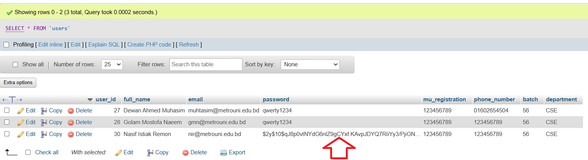
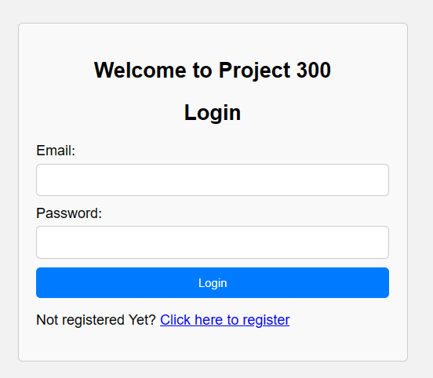

CSE 323 Web Programming & Project 300
A guide to start your project 300!
By Dewan Ahmed Muhtasim, lecturer, CSEEmail: muhtasim@metrouni.edu.bd

A guide to start your project 300!
By Dewan Ahmed Muhtasim, lecturer, CSE
At the end of this workshop, you should be able to
In this course, we need to develop web pages. Later, in the second half of the semester, you are going to develop a web-based system. If the pages are static HTML & CSS files, the software requirement is simple, where you only need a text editor (like Notepad or Sublime text editor) & a web browser to view the pages. However, you need more than that because besides those files, you are going to develop server side scripts in PHP. The PHP will do many operations that include connecting to a database. To run the PHP, you need a web server. On the other hand, to have a database, surely you need a database server. To make things easier, lets use a software package called XAMPP that can help you to install both the web & database server with minimum effort to configure settings & so on.
XAMPP is a free & open source cross-platform web server solution stack package developed by Apache Friends, consisting mainly of the Apache HTTP Server, MySQL database, & interpreters for scripts written in the PHP & Perl programming languages.
Firstly, you need to prepare a flash drive or an external hard drive. Make sure that you have minimum of 1GB of free spaces in the drive. In this tutorial, I assume that you have a flash drive. Then, go to this address:
https://www.apachefriends.org/download.html
In there, you’ll see various kinds of packages. Please:
Once the downloading has completed, double click the installer file to start the XAMPP setup process. Press Next > until you see a windows as below:

For this class, we only need the followings:
In the next window, as below, change the installation folder to your flash drive. In my case, my flash drive is in Drive C:\XAMPP. Your flash drive may had been assigned to another drive letter. Change the drive letter & maintain the xampp folder. Then, press Next >.

Press the Next > buttons until the installation starts as below:

It will take some time to complete. Once the installation is completed, you will see a window like this:

Uncheck the checkbox so that you will not start the Control Panel now. Press Finish to end the installation.
In this section, you will test whether or not your local computer has services that will interfere the Apache web server and MySQL database server. Apache web server runs, by default, in port 80 while MySQL database server runs in port 3306. So, you need to make sure that no other software in your local computer use those port numbers. Other software that might use the port 80 are Internet Information Server (IIS) and Skype.
Firstly, you need to scan all opened (used) ports in your local computer. To do that, run your Command Prompt.
Make sure that you run it as Run as administrator.
Type the following command & press Enter.
netstat -a -n -oIn my case, I will see outputs like this:
As you can see in above image, in my case, both 80 & 3306 ports of my computer are not in used by any unknown software. Please refer to the Local Address column. Port number is a number after the IP address. The address format is x.x.x.x:port. In your case, your computer might show different numbers. If you can't find port 80 & 3306 under the Local Address, it means you are OK. You no need to kill any proceses. You can proceed to Part 3.
For example, let's say my port 80 is used by a software identified by PID = 5804. To kill the process, execute this command:
taskkill /pid 5804Replace the 5804 with a number showed in your console. The output of this operation is:
For example, let's say my port 3306 is used by a software identified by PID = 6540. I would kill the process, by executing this command:
taskkill /pid 6540 /f/f is to force the process to stop. My console looks like this:
Close your Command Prompt console to end this part.
To start your web server, you need to open the XAMPP Control Panel. Open your file explorer & browse your flash drive until the installation drive:\xampp\ folder.
Since you will use your flash drive in different computers, it good to make a habit to setup the XAMPP first. This is to ensure that your XAMPP can properly run with correct configuration. For example, different computers will assign your flash drive with a different drive letter. You can do this by double clicking the setup_xampp.bat file. You will see output like this:

Type 1 & press Enter. You will get:
On the other hand, if you get Nothing to do message like in the image below, it means you are all set. The current configuration is matched with your current flash drive. Just press any key to close the command prompt dialog.

Once OK then, double click the xampp-control.exe file.
You will see a Control Panel window like this:

To start the Apache web server, click the Start button of the Apache module. Wait until you will see the Apache module is highlighted as green. This means the service is started as below.
Once the web service is started, you can test to open web pages from your localhost (your local computer). To open a default page of XAMPP, open your Web Browser & type this URL:
http://localhostYou will be directed to localhost/dashboard/ like this page:
Having this page means that your web server is up & running. All web pages that you want to host must be saved in drive:\xampp\htdocs folder. The dashboard in the URL is actually a folder in the htdocs folder. Open your file explorer & browse up to the dashboard folder.
Open back the XAMPP Control Panel. To start the MySQL database server, click the Start button of the MySQL module. Wait until you will see the MySQL module is highlighted as green as below.

phpMyAdmin is a free & open source tool written in PHP intended to handle the administration of MySQL with the use of a web browser. It can perform various tasks such as creating, modifying or deleting databases, tables, fields or rows; executing SQL statements; or managing users & permissions.
To start phpMyAdmin, open your web browser & enter this URL:
http://localhost/phpmyadmin/You will open a page like this:

In this project, we will write our codes in a text editor. Obviously, if you are using Windows operating system, the Notepad will do the job. But, we need a better text editor. There are may good text editors like the Adobe Dreamweaver CS4 HTML editor, Atom, Brackets & Notepad++. Instead of those editors we are going to use the Sublime Text Editor. Please note, you can use any editor you like. Sublime is a sophisticated text editor for code, markup & prose. It has a slick user interface, extraordinary features & amazing performance. The most important is that it is FREE. Most of expert users like to use text editor to compose HTML & PHP to gain flexibilty & performance. To download a Sublime Editor, go to this URL:
https://www.sublimetext.com/download
In there, you’ll see various kinds of versions. Click on windows to download the setupfile.
Once the downloading has completed, double click the installer file to start the Sublime setup process. Press Next > until you see a windows as below:

Change the installation folder to your flash drive. In my case, my flash drive is in Drive C:\. Maintain the Sublime Text 4 as the name of the installation folder. Then, press Next > until you press Install. To end the installation process, press Finish button in the last installation window as below:

Open your file explorer & browse, or search for Sublime Text folder.Double click the sublime_text.exe file & you will see a text editor like this:
In this way, you make Sublime Text Editor as a portable software. You will carry this text editor in your flash drive anywhere anytime. Once you start your web & database servers, you can open Sublime & start coding.
As a start, lets create your first HTML page using Sublime & save in htdocs folder. Create a new file. First thing is to set the type & syntax of your file by selecting HTML at the bottom-right corner of your Sublime like:

Later if you are composing a PHP file, then you need to select PHP in the list. Next, save the file as hello.html. Copy & paste the following codes in Sublime. Alternatively, you can type html & press tab. A skeleton of HTML code will be automatically created.
|
1
2
3
4
5
6
7
8
9
10
|
<!DOCTYPE html>
<html><head><meta charset = "utf-8"><title>Hello</title></head><body><p>Now you know how to start your Project 300!</p></body></html> |

Save the HTML file in your XAMPP\htdocs folder by clicking on save as & name it "hello.html". Open your web browser & type this URL:
http://localhost/hello.htmlYou will get a page like this:
In this section we are going to create new database in phpMyAdmin console using SQL queries.
Open XAMPP-Control panel & Press Admin > Under MySQL option.
A phpmyadmin control panel will open in your browser.Now click on SQL >
An empty space will open up for you to write SQL queries. Paste this line of SQL query in this box & press Go >
|
1
|
CREATE DATABASE Project300;
|
Congratulations! You have already created a new DATABASE named Project300! Now, let's create a USER table under this database. Select project300 database from the list:
Once the project300 DATABASE is opened, click on SQL > & paste the following codes to create "users" table with the following attributes & press . Go >
CREATE TABLE users ( user_id INT AUTO_INCREMENT PRIMARY KEY, full_name VARCHAR(100) NOT NULL, email VARCHAR(100) UNIQUE NOT NULL, password VARCHAR(100) NOT NULL, mu_registration VARCHAR(20) NOT NULL, phone_number VARCHAR(20) NOT NULL, batch VARCHAR(10) NOT NULL, department VARCHAR(100) NOT NULL );
A 'users' table has been created with the following attributes.

In this tutorial, I am not going to discuss what are the types of attributes we have created, rather we are going to focus on the processs of creating them.
In this section, we are going to create a basic Registration Form webpage for user sign up.
Now open back your sublime editor, & open the "hello.html" file you saved earlier inside XAMPP\htdocs folder. Your html file should look like this:
Copy & replace the following HTML code:
<!DOCTYPE html>
<html lang="en">
<head>
<meta charset="UTF-8">
<meta name="viewport" content="width=device-width, initial-scale=1.0">
<title>Project 300</title>
<link rel="stylesheet" href="styles.css">
</head>
<body>
<div class="container">
<h2>Project 300</h2>
<h2>User SignUp</h2>
<label for="full_name">Full Name:</label>
<input type="text" id="full_name" name="full_name" required>
<label for="email">Email:</label>
<input type="email" id="email" name="email" required>
<label for="password">Password:</label>
<input type="password" id="password" name="password" required>
<label for="mu_registration">MU Registration:</label>
<input type="text" id="mu_registration" name="mu_registration" required>
<label for="phone_number">Phone Number:</label>
<input type="tel" id="phone_number" name="phone_number" required>
<label for="batch">Batch:</label>
<input type="text" id="batch" name="batch" required>
<label for="department">Department:</label>
<select id="department" name="department" required>
<option value="">Select Department</option>
<option value="CSE">CSE</option>
<option value="ENGLISH">ENGLISH</option>
<option value="LLB">LLB</option>
<option value="BUSINESS">BUSINESS</option>
</select>
<button type="submit">Register</button>
</form>
</div>
</body>
</html>
Once copied, save the file. Open your browser & go to:
http://localhost/hello.html
You should see a webpage like the following screenshot. If nothing changes, try to do control+F5 > or open a private window.
Since we haven't done the css part, the webpage does not look good. Now create a new file on submlime, click File > then click on New File > or simply press control+n > if you are using windows.
Copy & paste these css codes into your new file & save as > "styles.css".
body {
font-family: Arial, sans-serif;
background-color: #f2f2f2;
}
.container {
max-width: 400px;
margin: 50px auto;
padding: 20px;
background-color: #fff;
border-radius: 5px;
box-shadow: 0px 0px 10px 0px rgba(0, 0, 0, 0.1);
}
h2 {
text-align: center;
margin-bottom: 20px;
}
label {
display: block;
margin-bottom: 5px;
}
input[type="text"],
input[type="email"],
input[type="tel"],
input[type="password"] {
width: 100%;
padding: 10px;
margin-bottom: 10px;
border: 1px solid #ccc;
border-radius: 5px;
box-sizing: border-box;
}
button {
width: 100%;
padding: 10px;
background-color: #007bff;
color: #fff;
border: none;
border-radius: 5px;
cursor: pointer;
}
button:hover {
background-color: #0056b3;
}
select {
width: 100%;
padding: 10px;
margin-bottom: 10px;
border: 1px solid #ccc;
border-radius: 5px;
box-sizing: border-box;
appearance: none;
-webkit-appearance: none;
-moz-appearance: none;
background-repeat: no-repeat;
background-position: right 10px center;
}
select option {
padding: 10px;
}
You should see a webpage like the following screenshot. If nothing changes, try to do control+F5 > or open a private window.
Now, the registration form is looking so elegant...........

Sadly we are not done yet! In the following section we are going to write some php code to connect with our "project300" database & store the values inside "users" table.
In this section, we are going to write some PHP codes & create a simple API to store values to the "users" table.
Make sure your apache & MySQL servers are still running from the XAMPP controller.
Rename your "hello.html" file to "registration.html" to better organize the files.
Next create a new PHP file by simply pressing control+n> or from File->New File.
Save the new php file as "registration_api" in XAMPP\htdocs folder as shown in the screenshot below:
First of all, we will write PHP code to connect our "registration_api.php" file with the database. Copy & paste the following codes in your "registration_api.php" file.
<?php
// Parameters for database connection
$servername = "localhost";
$username = "root";
$password = "";
$dbname = "project300";
// Create connection with the parameters
$conn = new mysqli($servername, $username, $password, $dbname);You might not need to change any parameters here. Now, copy & paste the following code to your "registration_api.php" file.
// Checking the connection
if ($conn->connect_error) {
die("Connection failed: " . $conn->connect_error);
}Now, we will retrieve the user input from the registration form we have create earlier. Copy & paste the following code to your "registration_api.php" file.
// Retrieve user input from the form
$full_name = $_POST['full_name'];
$email = $_POST['email'];
$password = $_POST['password'];
$mu_registration = $_POST['mu_registration'];
$phone_number = $_POST['phone_number'];
$batch = $_POST['batch'];
$department = $_POST['department'];We have to write a SQL query to insert user data into the 'users' table. Copy & paste the following SQL code to your "registration_api.php" file.
// Prepare SQL query to insert user data into the 'users' table
$sql = "INSERT INTO users (full_name, email, password, mu_registration, phone_number, batch, department) VALUES ('$full_name', '$email', '$password', '$mu_registration', '$phone_number', '$batch', '$department')";Now we have to execute the SQL query using the following codes. Copy & paste the following SQL code to your "registration_api.php" file.
// Execute SQL query
if ($conn->query($sql) === TRUE) {
echo "New record created successfully";
} else {
echo "Error: " . $sql . "<br>". $conn->error;
}Finally, we have to close the database connection. Copy the followin codes:
// Close database connection
$conn->close();
?>
Now, the "registration_api.php" should look as shown in the screenshot below:
Congratulations, you have created your first API. However, the script is a simple backend process, not a full-fledged API.
Before moving on, we want to check if this API is working correctly. Programmers normally use postman software to check RestAPI's.
Go to this address & download the correct Postman for your PC:
https://www.postman.com/downloads/
Once you have installed Postman, follow the screenshot below to make the API post request. If everything is correct so far, you should see this response from the API ""New record created successfully";"
Now open phpMyAdmin panel, you should see a new data has been stored.
If you are able to see the new data under "users" table, we can confirm that the API we have created is working properly.
Now, we have to connect the registration form with this API. Open back your registration.html file in the Sublime text editor. Copy the following line of code & paste it in the appropriate place as shown in the screenshot.
<form action="http://localhost/registration_api.php" method="post">Save the file & open it in your browser. Complete the form & press Register>.
After Pressing Register, the response from the API should be displayed in the browser in a new window.
Open your phpMyAdmin panel, you should be able to see the new entry is created under the "users" table.
When we submit the form to http://localhost/registration_api.php using the POST method, we are essentially sending data to a server-side script (registration_api.php) via HTTP. While this setup is not a full-fledged RESTful API in the traditional sense, it does function as an API in a broader sense. Now, we must secure user's password! This helps in protecting the user's password from being exposed even if the database is compromised.
Change
$password = $_POST['password'];to
$raw_password = $_POST['password'];Add this lines of code before SQL operations.
$password = password_hash($raw_password, PASSWORD_DEFAULT);Your registration_api.php file should look like this.
Save & reload registration.html in the browser, register a new user using the registration form we have created earlier. Check the database, now the password is secured. "password_hash()" function is used to hash the password before inserting it into the database.

In this section we will create login page & user authentication process. First, we need to create a new login.html file in the XAMPP\htdocs folder. After creating the file, copy the following code & paste the following code:
<!DOCTYPE html>
<html lang="en">
<head>
<meta charset="UTF-8">
<meta name="viewport" content="width=device-width, initial-scale=1.0">
<title>Login</title>
<link rel="stylesheet" href="styles.css">
</head>
<body>
<div class="login-container">
<h2>Project 300</h2>
<h2>Login</h2>
<form action="http://localhost/login_process.php" method="POST">
<div class="form-group">
<label for="email">Email:</label>
<input type="email" id="email" name="email" required>
</div>
<div class="form-group">
<label for="password">Password:</label>
<input type="password" id="password" name="password" required>
</div>
<button type="submit">Login</button>
</form>
</div>
</body>
</html>
Open styles.css file & paste this css code.
.login-container {
max-width: 400px;
margin: 50px auto;
padding: 20px;
border: 1px solid #ccc;
border-radius: 5px;
background-color: #f9f9f9;
}
Now, save both the files. The files should look like the following screenshots.
Open the login.html file in the browser, you can see the login form is created successfully.
Now, we will create the authentication logic in php. Create a new login_process.php file in the XAMPP\htdocs folder. Paste the following code in the newly created page.
<?php
// Start session
session_start();
// Parameters for database connection
$servername = "localhost";
$username = "root";
$password = "";
$dbname = "project300";
// Create connection
$conn = new mysqli($servername, $username, $password, $dbname);
// Check connection
if ($conn->connect_error) {
die("Connection failed: " . $conn->connect_error);
}
session_start() is a PHP function used to start or resume a session. Sessions in PHP allow you to store user-specific data across multiple pages. Copy & paste the following code to get the user input from the login.html file.
// Retrieve user input from the form
$email = $_POST['email'];
$password = $_POST['password'];
Now, we need to check whether the provided email is in the database or not. First, we check the database if the email is there!
// Query to check if the email exists in the database
$sql = "SELECT * FROM users WHERE email='$email'";
$result = $conn->query($sql);
With the following code, we check whether we got atleast 1 result or not. Explore & understand the logic & try to improve it.
if ($result->num_rows > 0) {
// Email exists, now verify the password
$row = $result->fetch_assoc();
if (password_verify($password, $row['password'])) {
// Password is correct, set session variables
$_SESSION['email'] = $email;
$_SESSION['full_name'] = $row['full_name'];
$_SESSION['mu_registration'] = $row['mu_registration'];
$_SESSION['phone_number'] = $row['phone_number'];
$_SESSION['batch'] = $row['batch'];
$_SESSION['department'] = $row['department'];
// Redirect to dashboard or any other page
header("Location: profile.php");
exit();
} else {
// Password is incorrect
echo "Invalid password";
}
} else {
// Email doesn't exist
echo "User not found";
}
We also store the user's details in the session to pass it to across different pages. We need to close the connection now. Copy & paste the followin code.
// Close database connection
$conn->close();
?>
The login_process.php file should look like the following screenshot:
Once user is logged in successfully, we take the user to a profile page where user can see the data we collected using session function. Create a file named "profile.php" in the XAMPP\htdocs folder. Copy paste the following inside the profile.php file:
<?php
// Start session
session_start();
// Check if user is logged in, if not redirect to login page
if (!isset($_SESSION['email'])) {
header("Location: login.html");
exit();
}
// Retrieve user details from session
$email = $_SESSION['email'];
$full_name = $_SESSION['full_name'];
$mu_registration = $_SESSION['mu_registration'];
$phone_number = $_SESSION['phone_number'];
$batch = $_SESSION['batch'];
$department = $_SESSION['department'];
?>
This code ensures that only logged-in users can access profile page by checking their session status & redirects them to the login page if they are not logged in. If they are logged in, it retrieves their user details from session variables for further use. Now, we will do the HTMl part. Copy the code given below & paste it under the php script.
<!DOCTYPE html>
<html lang="en">
<head>
<meta charset="UTF-8">
<meta name="viewport" content="width=device-width, initial-scale=1.0">
<title>Profile</title>
<link rel="stylesheet" href="styles.css">
</head>
<body>
<div class="dashboard-container">
<h2>Profile</h2>
<div class="details">
<p><strong>Full Name:</strong> <?php echo $full_name; ?></p>
<p><strong>Email:</strong> <?php echo $email; ?></p>
<p><strong>MU Registration:</strong> <?php echo $mu_registration; ?></p>
<p><strong>Mobile:</strong> <?php echo $phone_number; ?></p>
<p><strong>Batch:</strong> <?php echo $batch; ?></p>
<p><strong>Department:</strong> <?php echo $department; ?></p>
</div>
<a href="http://localhost/logout.php" class="logout-btn">Logout</a>
</div>
</body>
</html>
The profile.php file should look like the following screenshot:
Open styles.css file & paste this css code.
.dashboard-container {
max-width: 600px;
margin: 50px auto;
padding: 20px;
border: 1px solid #ccc;
border-radius: 5px;
background-color: #fff;
box-shadow: 0 0 10px rgba(0, 0, 0, 0.1);
}
h2 {
text-align: center;
}
.details {
margin-top: 20px;
}
.details p {
margin-bottom: 10px;
}
.details p strong {
font-weight: bold;
margin-right: 5px;
}
.logout-btn {
display: block;
width: 100px;
margin: 20px auto 0;
padding: 10px;
text-align: center;
border: none;
border-radius: 5px;
background-color: #007bff;
color: #fff;
text-decoration: none;
}
.logout-btn:hover {
background-color: #0056b3;
}
.logout-btn:focus {
outline: none;
}
Save everything & test the login function.You can create a new user with the registration form. The login function should be working now, & you should see profile page like the following screenshot once the user is logged in successfully:
Now, we need to work on the logout function. Crete a new logout.php file in the XAMPP\htdocs folder. Paste the following code:
<?php
// Start session
session_start();
// Unset all of the session variables
$_SESSION = array();
// Destroy the session
session_destroy();
// Redirect to login page after logout
header("Location: login.html");
exit();
?>
This code logs out the user by destroying the session & redirecting them to the login page. Check the logout button in the profile page. The registration, login, profile, & logout tasks are completed so far.
In this section we will create some navigations. The users should be able to navigate to registration if they are not regisered. We can do this using both PHP and javascript. Let's do this part in JavaScript to understand how we can implement javascript inside HTML file. Open the login.html file and paste this code under the form:
<p id="register-text">Not registered Yet? <a href="#" id="register-link">Click here to register</a></p>
Now, copy and paste this javascript code inside the body:
<script>
// Function to navigate to registration page
function navigateToRegistration() {
window.location.href = "http://localhost/registration.html";
}
// Event listener for the register link
document.getElementById("register-link").addEventListener("click", function(event) {
event.preventDefault(); // Prevent default link behavior
navigateToRegistration(); // Call the navigation function
});
</script>
Save and open the login.html file in your browser. You should be able to see the new registration page link, & when clicked, users should navigate to the registration.html file.

We will do the same for registration page. Open the registration.html file and paste this code under the form:
<p id="login-text">Already registered? <a href="#" id="login-link">Click here to login</a></p>
<script>
// Function to navigate to login page
function navigateToLogin() {
window.location.href = "http://localhost/login.html";
}
// Event listener for the login link
document.getElementById("login-link").addEventListener("click", function(event) {
event.preventDefault(); // Prevent default link behavior
navigateToLogin(); // Call the navigation function
});
</script>
Check the navigation, it should be working just fine! Now, once user complete the form and click on "Register", instead of going to the registration_api.php file, we should navigate the users to the login.html page. To accomplish this, we need to write some additional javascript code. But before that, change
<form action="http://localhost/registration_api.php" method="post">
To
<form id="registration-form">
Now use this javascript in the scripting part of your registration.html file.
// Event listener for the form submission
document.getElementById("registration-form").addEventListener("submit", function(event) {
event.preventDefault(); // Prevent default form submission behavior
// Submit the form data to the registration API
fetch("http://localhost/registration_api.php", {
method: "POST",
body: new FormData(document.getElementById("registration-form"))
})
.then(response => {
// If the registration was successful, navigate to the login page
if (response.ok) {
navigateToLogin();
} else {
// Handle registration errors if needed
console.error("Registration failed");
}
})
.catch(error => {
// Handle network errors
console.error("Network error:", error);
});
});
Now try to complete the registration form & click on the "Regsitration" button, you should be navigated to the login page, and the new users data is also stored in the database.